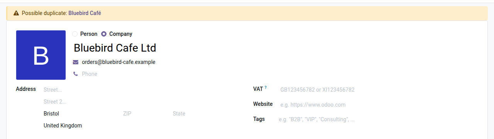
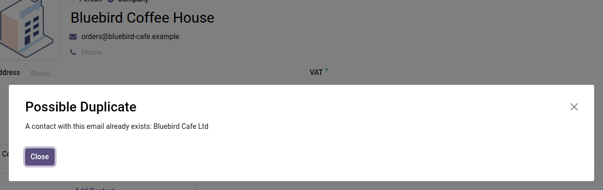
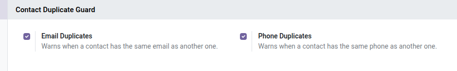

Contact Duplicate Guard
Warn your teams before a duplicate settles in — without blocking data entry.
Every week, a contact gets entered twice: same email, same phone, name spelled slightly differently. The outcome is always the same — a polluted CRM, follow-ups sent twice, and teams that no longer know which record is the reference. Odoo does not natively detect these collisions at entry time: the duplicate is created without warning, and nobody finds out until it is too late.
What it adds
-
⚡ Instant alert as you type — as soon as the user enters an email or phone number already on file, a warning window shows the name of the existing contact, before the record is even saved.
-
🔔 Visible banner on the contact form — if a duplicate is detected (including on creation by import or API), an orange "Possible duplicate" banner stays displayed with a clickable link to the existing contact.
-
✅ Non-blocking, zero friction — the alert informs without interrupting the workflow. The contact is still created if the user decides so; the decision stays human.
-
🔧 Configurable from Settings — enable or disable email detection and phone detection separately, to suit your business needs.
Real screenshots
1. A banner on the duplicate
A colleague created the same café again with the same email: the form shows an orange banner with a link to the contact that already existed.

2. Warned while typing
As soon as an email or phone already on file is entered, a warning names the existing contact, before anything is saved. The user still decides.

3. Email, phone, or both
Two switches in the Settings: check emails, phones, or both, depending on how your contacts share them.

Why install it
-
Stop the pollution at the source — a duplicate is costly once it is in the database; it costs nothing to avoid if it is flagged at the right moment.
-
Respects your existing process — unlike a blocking SQL constraint, the alert lets the team handle legitimate cases (two people at the same number, a shared email address) without any Odoo error.
-
Installed in 2 minutes, open source — no heavy dependency, no data migration. Active immediately on all contacts, existing and new.
LGPL-3 license — compatible with Odoo 18.0. Support: apps@odooskills.com.